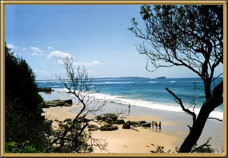

Photographer: Jean Stokes
Another beautiful beach! We're very fortunate in this respect in Australian - most of our beaches are like this. However, there are some that, although beautiful, are very dangerous.